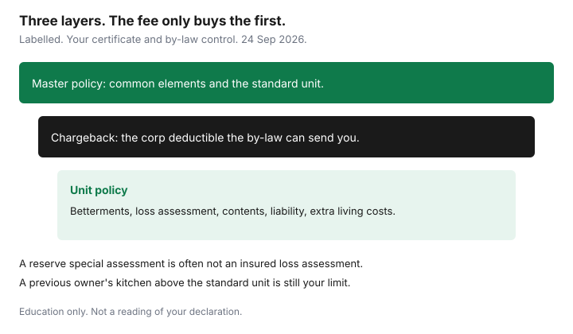

Insurance · Canada
Condo Corp Policy vs Your Unit Policy in Canada: Closing the Deductible and Betterments Gap
The corporation’s insurance certificate is not your kitchen, and it is not your cheque when the building’s water deductible comes back to owners. A unit policy has to pick up three things the master policy routinely leaves behind: the deductible the corporation can charge to you, the betterments above the standard unit, and a loss assessment when the corporation bills owners after a covered claim. Contents and liability never lived on the master policy in the first place. This page is that gap, in more detail than a deductible overview. It is education. It is not a reading of your declaration and not a quote.
The shorter map of corporation versus unit, including the consumer range of large water deductibles, is the condo deductible guide filed under Housing. Use this page for the betterments test and for the difference between a loss assessment and a special assessment that rebuilds the reserve.
Disclosure: This page is education. Home insurance quote flows and broker quote portals are an offer type. Saving Optimizer may earn a commission if partner links are added later. We do not currently claim an insurer or broker partnership, and we do not rank companies. We do not sell policies. Dollar figures in sketches are labelled illustrations. Certificate rules were read as general Canadian practice on 24 Sep 2026 and do not replace your declaration.
Key takeaways
- Read the certificate for the master policy’s perils, its deductibles by peril, and what the standard unit includes. The rest is yours.
- A corporation water deductible can be charged back to the unit that the by-law points at. Your $1,000 unit deductible is a different cheque.
- Flooring, kitchens, and other work above the standard unit are betterments. A previous owner’s renovation conveyed to you is still your limit to set.
- Loss-assessment coverage responds to some bills the corporation sends after a claim. A special assessment to refill the reserve, or to fix an excluded peril, may not be that coverage.
- Liability, contents, and additional living expenses sit on the unit policy. Do not let a low condo fee talk you out of the policy.
- At each annual general meeting, replace last year’s deductible schedule and match the betterments limit to the unit you actually live in.
Read the corporation certificate: what the master policy covers and excludes
Ask the property manager or the status-certificate package (Ontario) or the Form B package (British Columbia) for the insurance certificate, not a sentence in the listing that says “building insurance included.” Ontario’s Condominium Act requires the corporation to maintain insurance on its property. British Columbia’s strata legislation and Alberta’s condominium legislation put an insurance duty on the strata or condominium as well. The statute is not the wording. The certificate and the standard unit definition are the wording you can actually compare to a sofa.
| Field on the certificate or by-laws | What you are trying to learn |
|---|---|
| Property insured | Common elements and the standard unit, or a broader “all in” definition. The label changes by province and by declaration. |
| Deductible by peril | Water, sewer, flood, and other property. One number for “the deductible” is how owners miss a six-figure water line. |
| Who can be charged | The owner of the unit the by-law identifies, all owners, or the corporation’s reserve. The by-law decides. The certificate does not invent it. |
| Exclusions you care about | Betterments, earthquake, overland flood, and sewer backup are the usual arguments after a loss. Flood and sewer on a house are a different guide. The same perils can be optional on a master policy. |
Improvements the declaration defines as outside the standard unit are not a grey area you negotiate at claim time. They are outside the master policy by design. If the package you received at purchase is more than a year old, ask for the current certificate before you set your unit limits. A renewal of the corporation’s policy can raise a water deductible without changing your condo fee.
Unit-owner deductible exposure after a corp claim (water is the classic)
Water is the claim that produces the invoice owners did not expect: a dishwasher line, a failed stack, a toilet on the floor above. The corporation’s insurer may pay the building’s loss above the corporation’s deductible. The deductible itself is not a gift from the insurer. If the by-law allows the board to charge that deductible to an owner, the owner receives a bill. Your unit policy’s ordinary deductible — often a few hundred or a few thousand dollars — does not pay the corporation’s deductible unless you bought coverage that says it does.
The Housing deductible guide records the consumer range owners were seeing in the mid-2020s, often $25,000 to $100,000 on water, sometimes higher. Treat that as a range to ask about, not as your building’s number. A labelled sketch: a $50,000 water deductible charged to one unit is a $50,000 bill, not $50,000 divided by the number of units. A different by-law splits the same deductible across 80 units, about $625 each. Both are real patterns. Only the by-law tells you which one you live in. Loss-assessment or deductible-assessment coverage on the unit policy is the line you hope responds, up to its limit, and only when the wording matches the kind of charge. A $10,000 assessment limit on a $75,000 chargeback is a partial plan. Ask the intermediary to show the limit on the declarations page, in writing, next to the corporation’s water deductible.

A claim you cause to the unit below can be your liability, the corporation’s deductible, or both. Opening only one file because “the building has insurance” is how a neighbour’s ceiling becomes an uninsured invoice. Tell the corporation and your unit insurer.
Betterments and improvements: flooring, kitchens, and custom work you must insure
The standard unit is a definition, usually in a by-law: the finishes the corporation insures, often something close to the builder’s original. Everything above that is a betterment or improvement. Hardwood where the standard unit says carpet, a stone counter where the standard unit says laminate, a moved wall, a custom shower. If you bought the unit from someone who had already renovated, those betterments are yours to insure even though you did not install them. The purchase price is not a betterments limit. Neither is the condo fee.
Set the limit from replacement cost of the work above the standard unit, not from what you paid the previous owner for the whole apartment. Photograph the unit when you buy and after each project. Keep invoices. A kitchen you cannot describe will be discussed as builder-grade. Update the limit when the work is done, in the same way a house update belongs on the new-home checklist after a renovation. Underinsuring betterments to save a small premium is how a kitchen fire becomes a negotiation about the standard unit.
Some master policies insure the unit to a higher standard and the unit owner only needs a smaller betterments amount. That is a certificate finding, not a default. If you cannot point to the sentence, assume the renovation is yours.
Loss assessment coverage: when the corp bills owners after a large claim
After a large claim, a corporation can bill owners for more than one reason. The unit policy does not treat those bills as the same thing.
- Deductible assessment. The corporation’s deductible, charged under the by-law. This is the water example. You want a unit coverage that names deductible assessments or loss assessments and a limit at least as large as the biggest deductible the certificate shows.
- Loss assessment for a covered shortfall. Owners are billed for a share of a claim that exceeded the master policy, or for a peril the master policy did cover but not in full. The unit wording usually requires the peril to be one your own policy covers. If the master policy did not buy earthquake and the loss is earthquake, your loss-assessment line may not respond either. Match the perils.
- Special assessment for the reserve or for an excluded repair. A bill to refill the reserve fund, to pay a repair the master policy excluded, or to fund a project the owners voted, is often not an insured loss assessment. It is a housing cost. Budget it with the fee. Do not expect the unit insurer to reimburse a reserve top-up because the word “assessment” appears in both sentences.
Ask the broker to show, on one page, the loss-assessment limit, whether deductibles of the corporation are included, the perils required, and the dollar next to each corporation deductible. A quote that says “condo package included” has not answered the question.
Liability and contents still sit on your unit policy—do not skip it
A guest who slips on your floor is your liability question. A burst hose that damages the unit below can be both liability and a deductible chargeback. The corporation’s liability policy is for the corporation. Contents — furniture, clothing, and the unscheduled jewellery limits in the scheduled-valuables guide — are yours. Additional living expenses, if a covered loss makes the unit unlivable, are yours. Owners who rent the unit out need a different form; an owner-occupied package can fail a tenant claim. Say the use on the application.
$1 million of liability is a common floor and $2 million is what many managed buildings now expect. Those are market habits, not a statute. If the corporation requires unit insurance in a by-law, keep the proof. Going without a unit policy because the fee “includes insurance” leaves liability, contents, betterments, and the deductible bill in your chequing account. Home quote flows and broker portals are an offer type for pricing that package. Compare it with the certificate in hand. The bundle guide is relevant only after the unit limits are right. A multi-policy discount on a missing loss-assessment line is not a saving.
Annual sync with the condo board’s insurance summary at AGM time
The annual general meeting is when the insurance summary is supposed to be in the package. Treat it as a renewal of your unit policy, even if your unit renewal is in a different month.
- Replace last year’s deductible schedule. Circle any peril that moved.
- Check whether the standard unit by-law changed. A change can move a floor from “theirs” to “yours.”
- Set the betterments limit to the unit as it is, not as the builder left it.
- Set the loss-assessment limit against the largest deductible and any shortfall language you were given.
- Confirm you still live there. A rental, a vacant unit, or a short-term listing is a use change. Tell the insurer before the meeting’s minutes are the only record.
- File the certificate with the annual review so the auto renewal does not crowd it out.
If the summary is missing from the package, ask the board in writing. You are not being difficult. You are pricing a bill the by-law may already have your name on.
Sources & date stamps
- Financial Consumer Agency of Canada, getting insurance — read what is covered and excluded. Used 24 Sep 2026.
- Ontario Condominium Act, and the comparable strata and condominium statutes in other provinces — corporations must insure; the standard unit and the by-laws decide the owner’s share. Confirm the current statute. Used 24 Sep 2026.
- Saving Optimizer, condo unit deductibles (Housing) — chargeback and water-deductible context. The dollar range there is a consumer range, not this building’s certificate.
Frequently asked questions
Does the condo corporation’s insurance cover my kitchen renovation?
Only to the standard unit defined in the declaration or by-laws. Flooring, counters, and other work above that standard are betterments on your unit policy, including renovations a previous owner made.
Is the corporation’s water deductible the same as my unit deductible?
No. The corporation’s deductible can be tens of thousands of dollars and the by-law may charge it to an owner. Your unit deductible is a separate, usually much smaller, amount. You need a loss-assessment or deductible-assessment limit that matches the certificate.
Will loss-assessment coverage pay a special assessment for the reserve fund?
Often no. Loss assessment is for bills tied to a covered loss, subject to the wording. A reserve top-up or a repair the master policy excluded is frequently an owner cost, not an insured assessment.
Can I skip unit insurance if the condo fee includes building insurance?
The fee’s master policy is not your contents, your liability, your betterments, or a deductible chargeback. Going without a unit policy leaves those with you.
Is this legal or insurance advice?
No. Education only. Read the certificate and the by-laws. Home quote flows and broker portals are an offer type. We do not claim a partnership.